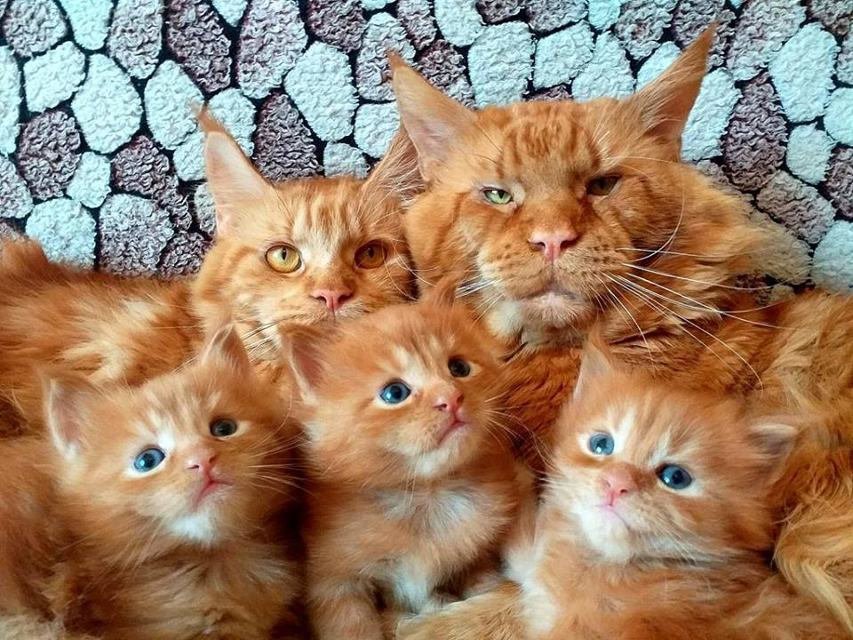
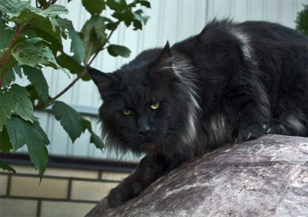

Мейн-кун – самая крупная порода домашних кошек, которую можно завести в семье с маленькими детьми и другими животными. Ведь несмотря на хищную внешность, представители породы спокойны и неагрессивны.
А еще кошек мейн-кунов относят к классу питомцев-компаньонов. Причем с характером собаки. Поэтому не удивляйтесь, если животное захочет поиграть в апорт или проявит интерес к купанию в ванне или прогулкам на шлейке. Как и все компаньоны, куны не отходят от хозяев ни на шаг. Но по-настоящему верны только тому, кого выберут в качестве вожака. Обычно это человек, который проводит с кошкой больше времени и следит за ее питанием. В некоторых случаях им может стать даже ребенок.
Ключевые качества
– Уравновешенный характер. Мейн-кун не вьется в ногах, чтобы привлечь внимание, и почти не подает голос. Тип темперамента – сангвиник. Животное этой породы легко подстраивается под настроение хозяина и не запоминает обиды. При выборе кошки, которая захочет сидеть на коленях, обращайте внимание на поведение родительской пары. Мейн-куны могут быть независимыми и идти в руки с неохотой или, наоборот, ласковыми и общительными.
– Высокий интеллект. Кошки породы мейн-кун регулярно попадают в рейтинги самых умных представителей семейства кошачьих. Животные обладают хорошей памятью и легко поддаются дрессировке. Например, быстро запоминают базовые команды из общего курса дрессировки для собак, могут ходить в туалет на унитаз или выключать свет в комнате.
– Позднее взросление. Мейн-кун сохраняет живой интерес к подвижным играм и ведет себя как котенок до трех лет. После – приобретает степенность взрослой кошки, предпочитающей наблюдать за происходящим со стороны.
